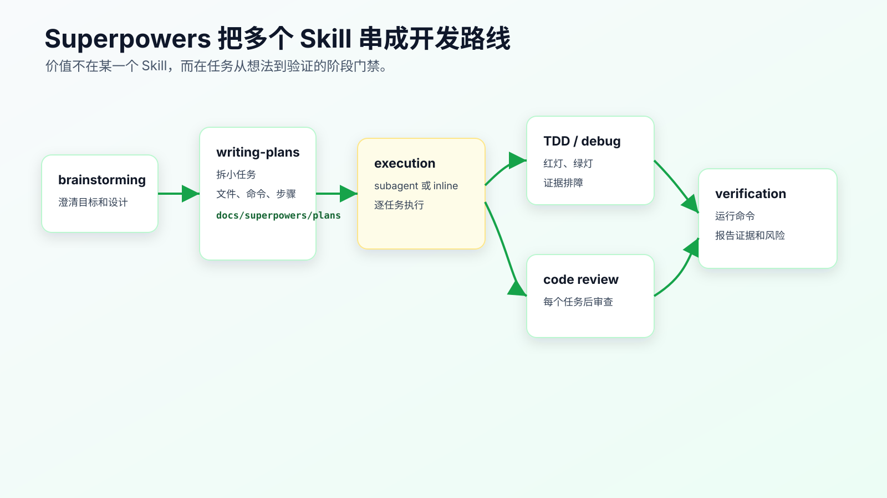
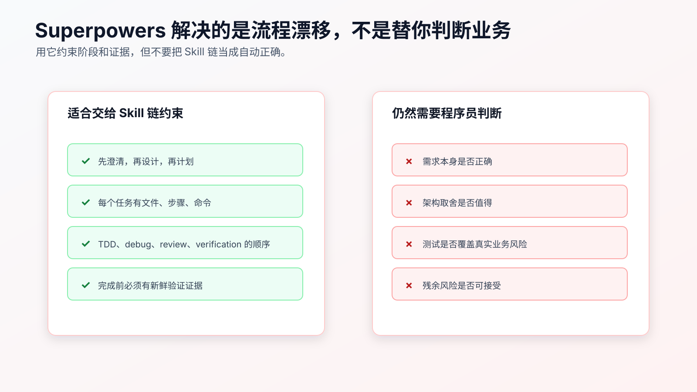

Superpowers 工作流拆解：把工程纪律变成 Skill 链
Superpowers 值得拆开看。
它的价值不在于替你选定唯一框架，而在于把软件开发纪律拆成多个可触发的 Skill：
brainstorming
writing-plans
test-driven-development
systematic-debugging
requesting-code-review
verification-before-completion
subagent-driven-development / executing-plans
finishing-a-development-branch
这些 Skill 单独看都不神秘。设计前澄清需求、写计划、TDD、系统化调试、代码审查、完成前验证，程序员本来就知道。
难点在于：AI 做任务时，经常跳过这些步骤。
先拆清楚一个基础问题：Superpowers 到底把哪些工程动作拆成了 Skill 链，为什么它和前面的 SDD / OpenSpec 不重复。
SDD / OpenSpec 解决的是“这次需求到底是什么、边界在哪里、任务怎么拆”。Superpowers 解决的是“开发过程中哪些动作不能跳过、失败时怎么收敛、完成前怎么留证据”。一个偏需求合同，一个偏执行纪律。
Superpowers 的思路是把这些步骤变成一条 Skill 链，让 Agent 在不同阶段进入不同工作流，而不是靠一条万能 prompt 从头管到尾。

它解决的是流程漂移
AI Coding 常见的流程漂移是这样的：
需求还没澄清 -> 直接实现
设计还没确认 -> 开始改代码
测试还没失败 -> 写实现
调试还没找根因 -> 补判断
review 还没做 -> 继续下一步
验证没运行 -> 声称完成
每一步看起来都只是“快一点”。合起来就是不可控。
Superpowers 把这些容易被跳过的动作前置成门禁：
- 做东西前先 brainstorming。
- 有 spec 后再 writing-plans。
- 实现行为前触发 TDD。
- 遇到失败先 systematic-debugging。
- 完成任务后 requesting-code-review。
- 声称完成前 verification-before-completion。
它约束的不是语言能力，而是 Agent 进入下一步前必须经过哪些证据点。
一个业务需求大概怎么走
还是用“已支付订单取消进入退款流程”的需求。
如果随手让 AI 做：
把 paid order cancel 改成 refund_requested，并创建退款请求。
它可能一次性改出一个大 diff。
用 Superpowers 思路，流程应该拆开。
第一步，brainstorming 负责把需求变成设计。
要澄清：
paid 订单当前行为是什么？
pending 和 shipped 是否保持不变？
退款请求失败时订单状态怎么处理？
重复取消是否幂等？
payment provider callback 是否在范围内？
API response shape 是否允许变化？
输出不是代码，而是设计。
如果项目已经有 OpenSpec change、issue 或设计文档，brainstorming 不应该另起一套需求。它更适合用来检查缺口：哪些业务状态没说清楚，哪些异常路径没确认，哪些兼容性风险没有进入当前需求合同。
第二步，writing-plans 把设计拆成任务。
计划里要写：
Task 1: Add failing tests
Task 2: Add paid -> refund_requested transition
Task 3: Wire refund request creation
Task 4: Add failure handling
Task 5: Run broader verification
每个任务要有文件、步骤、命令和预期结果。
如果前面已经有 tasks.md，writing-plans 也不是重新发明任务列表，而是把任务落到更细的执行步骤、文件路径、测试命令和预期输出。
第三步，执行任务。
如果平台支持 subagent，可以每个任务独立执行并审查。没有 subagent，也可以按 executing-plans 的方式在当前会话里分批执行。
关键不是“必须用 subagent”，而是每个任务都要小、可审、可验证。
第四步，TDD 和 debugging 在执行中触发。
Task 1 必须先写失败测试并确认红灯。
如果测试失败不是预期红灯，就进入 systematic debugging，先找根因。
第五步，review 和 verification 收尾。
每个任务之后看 diff。完成前跑新鲜验证命令，不能只靠上一次输出或 Agent 总结。
这条路线比“一个 prompt 做完”慢一点，但它把风险拆开了。
到这里为止，仍然只是工作流拆解。真正落到项目里，还必须看到真实文件、测试、diff、验证输出和 review 风险。否则“实战”两个字就会变成概念演示。
Superpowers 的几个关键 Skill 怎么分工
brainstorming：把想法变成设计。
它不是头脑风暴聊天，而是防止 AI 在需求不清时直接实现。对个人程序员来说，可以把它理解成“需求和设计闸门”。
用在：
- 新功能。
- 行为变化。
- 不确定方案。
- 需要权衡边界的改动。
不适合：
- 明确 typo。
- 单行配置。
- 已有 tasks 里的小步骤。
writing-plans：把设计拆成执行计划。
它强调 exact file paths、具体步骤、验证命令、bite-sized tasks。这和我们前面讲的 tasks.md 一致。
它能防止：
- 计划只有大标题。
- 任务里没有验证。
- AI 一次性吞掉整个需求。
test-driven-development：用红灯约束实现。
它要求先写失败测试，确认失败，再写最小实现。
这对 AI 很关键，因为 AI 很容易先写实现，再让测试配合实现。
systematic-debugging：遇到失败先找根因。
它要求复现、读错误、查最近改动、追数据流、提出单一假设，再修。
这能防止 AI 看到错误就补空值判断。
requesting-code-review：引入独立审查。
它强调 reviewer 只看工作产物和需求，不继承当前会话历史。这个限制能减少当前会话带来的偏见。
当前会话里的 Agent 已经带着自己的推理路径和偏见，独立 review 可以减少“自己审自己”的盲区。
verification-before-completion：完成前必须有证据。
它的核心是：没有新鲜验证命令，就不能声称通过。
这是防止 AI 过早宣布完成的关键 Skill。
它的边界要说清楚
Superpowers 不会替你判断需求是否正确。
它也不会保证生成的计划一定合理。
它更不会保证测试覆盖了真实业务风险。
它能做的是把过程变得更难跳过：

适合交给 Skill 链约束的是：
- 阶段顺序。
- 任务粒度。
- TDD 红绿步骤。
- 调试证据循环。
- review 触发。
- 完成前验证。
仍然需要程序员判断的是：
- 需求本身是否正确。
- 设计取舍是否值得。
- 测试是否真的覆盖风险。
- review 反馈是否成立。
- 残余风险是否可接受。
如果你把 Superpowers 当成自动驾驶，就会过度信任。
如果把它当成“工程纪律执行器”，它适合个人工作流。
使用时不要全盘照搬
Superpowers 的默认工作流很强，但不一定适合每个任务。
对个人程序员，建议先借鉴三点。
第一，借鉴阶段门禁。
设计通过前不实现
计划通过前不改代码
测试红灯前不写实现
验证前不声称完成
第二，借鉴小任务。
每个任务要能在几分钟内完成、单独验证、单独 review。
第三，借鉴证据输出。
不要让 AI 只说“完成”。让它报告 changed files、commands、results、residual risk。
你不必一开始就完整引入所有 Skill，也不必所有任务都走完整链路。
小任务用轻流程。
复杂行为改动用完整链路。
一个可执行的使用路线
如果你已经安装了 Superpowers，可以这样用在复杂需求上。
先给任务，但不让它实现：
我们要修改 paid order cancellation 行为：
- paid cancel enters refund_requested.
- exactly one refund request is created.
- duplicate cancel is idempotent.
- refund request failure keeps order paid.
- payment provider callback is out of scope.
先不要改代码。
请按设计和计划流程推进。
然后看它是否先澄清和设计。
设计通过后，再让它写 plan。
计划应该包含：
Task 1: failing tests
Task 2: status transition
Task 3: refund request creation
Task 4: failure handling
Task 5: verification
每个 task 要有：
Files
Steps
Commands
Expected result
Stop conditions
执行时不要说“全部做完”。
指令只放开一个任务：
只执行 Task 1。
完成后停止。
不要修改实现代码。
运行指定测试并报告红灯结果。
Task 1 通过 review 后，再进入 Task 2。
这样就能把 Superpowers 思路落到个人工作流里。
失败时不要跳过调试链路
Superpowers 这类 Skill 链最容易在失败时被绕开。
常见情况是：
Task 1 写了失败测试。
Task 2 开始实现。
测试失败了，但失败信息和预期不一样。
Agent 说“这可能是测试环境问题”，然后继续改实现。
这时应该切到 systematic-debugging。
处理顺序是：
读取完整错误。
确认是预期红灯、实现缺口、基线失败还是环境问题。
如果无法分类，停止实现。
提出一个假设。
用最小命令或文件读取验证假设。
分类清楚后再继续原任务。
比如订单取消测试失败：
Expected: refund_requested
Received: cancelled
这可能是预期红灯，可以继续实现。
如果失败变成：
Cannot connect to test database
这就不是业务红灯。继续写实现只会污染证据。
Skill 链不是线性流水线。遇到非预期失败时，要允许流程回到调试，而不是为了完成计划继续往前走。
review 反馈要进入决策
requesting-code-review 的价值不是让另一个 Agent 说几句意见。
它的价值是让当前会话的惯性停下来。
但 review 反馈不能照单全收。
处理 review 的方式应该是：
finding 有文件、行号和可复现输入：优先处理。
finding 是需求理解差异：回到 spec 或 plan 核对。
finding 只是风格偏好：看项目规则是否有约束。
finding 会扩大范围：拆成后续任务，不混进当前 diff。
例如 reviewer 提出：
OrderService.cancelPaidOrder 里创建 refund request 后没有处理 duplicate cancel。
如果需求里明确要求幂等，这就是当前任务问题。
如果 reviewer 又提出：
可以顺手重构整个 OrderService 状态机。
这可能是好建议，但不应该混进当前交付。
Superpowers 的工程纪律不是“谁提反馈就改谁”，而是让反馈有证据、有归属、有边界。
不要把 Superpowers 讲成必选框架
Superpowers 值得研究，但不是程序员 AI Coding 的唯一入口。
你可以不用它，仍然采用同样的纪律：
需求不清先澄清。
设计不清先计划。
行为变化先测试。
失败先排障。
完成前跑验证。
复杂任务要独立 review。
Superpowers 的优势是把这些纪律打包成已经写好的 Skill 链，少了自己从零整理的成本。
它的成本是：你要理解每个 Skill 的触发条件、适用边界和输出要求。如果只是安装后盲目执行，也可能让小任务变重，或者让当前任务被不合适的流程包住。
实际使用时先选最有价值的几个：
- systematic-debugging
- test-driven-development
- writing-plans
- verification-before-completion
- requesting-code-review
这几个覆盖了 AI Coding 最常见的失控点。
等你熟悉后，再考虑 subagent-driven-development、executing-plans、finishing-a-development-branch 这类更完整的协作流程。
什么时候不适合用完整链路
下面这些任务不适合重流程：
- 改错别字。
- 调整一行配置。
- 改一个明确的测试断言文案。
- 更新 README 中过期命令。
- 一次性探索命令输出。
如果所有任务都强制 brainstorming、plan、TDD、review，会让工作流变成负担。
可以直接定义触发条件：
Use full Superpowers-style workflow when:
- behavior changes.
- multiple modules may be touched.
- tests need to be added.
- bug root cause is not obvious.
- public API, payment, auth, persistence, jobs, or state machine code is involved.
这样既保留纪律，也不拖慢小改动。
怎么检查 Superpowers 是否真的发挥作用
不要只看它有没有被安装。
看结果：
- 它是否在实现前澄清了需求。
- 是否写了可执行 plan。
- 是否把任务拆小。
- 是否先写失败测试。
- 遇到失败是否先排障。
- 是否在任务后做 review。
- 声称完成前是否运行了验证命令。
- 是否报告没有验证的范围。
如果这些都没有发生，只是工具名出现在环境里，那它没有真正进入工作流。
和 OpenSpec / Spec Kit 怎么搭配
OpenSpec 和 Spec Kit 更偏规格和开发流程组织。
Superpowers 更偏 Agent 执行纪律。
可以这样组合：
OpenSpec:
- 管 specs、changes、delta spec、archive。
Spec Kit:
- 管 constitution、spec、plan、tasks、implement 这条 SDD 流程。
Superpowers:
- 管 Agent 在设计、计划、TDD、调试、review、验证时是否按纪律执行。
不要在同一次任务里给 AI 三套互相竞争的 artifact。
如果当前任务以 OpenSpec 为主，就让 Superpowers 的执行纪律服务于 OpenSpec change：
以 openspec/changes/<change>/tasks.md 为任务来源。
执行时遵守 TDD、debug、review、verification 流程。
如果当前任务以 Spec Kit 为主，就让 Superpowers 服务于 Spec Kit 生成的 tasks。
主线只能有一条。
一个任务里的 Skill 链报告
使用 Superpowers 思路后，最终应该能留下类似报告：
Workflow evidence:
- Brainstorming / design:
- clarified paid, pending, shipped and duplicate cancel behavior.
- Plan:
- 5 tasks created, each with files and commands.
- TDD:
- paid cancel and duplicate cancel tests failed before implementation.
- Debug:
- no unexpected failure; expected red tests classified.
- Review:
- reviewed diff for API response shape, callback changes and migration.
- Verification:
- `npm test -- order-cancel`: PASS
- `npm test -- order`: PASS
- residual risk: real payment provider callback not verified locally.
这份报告不需要很长。它说明 Skill 链确实改变了执行路径，而不是只在对话里喊了几个工具名。
怎样把它迁移到自己的项目规则
如果你不想直接安装整套 Superpowers，也可以把关键纪律写进项目规则。
例如：
## Complex Changes
For behavior changes involving state, persistence, auth, payment, jobs, or public APIs:
- produce a plan before editing.
- split into reviewable tasks.
- write failing tests before implementation when practical.
- use systematic debugging for unexpected failures.
- run focused verification before completion.
- report commands, results, and residual risks.
这不是复制 Superpowers，而是把它的工程精神迁移到自己的 repo。
等你发现这些规则在多个项目里反复出现，再把它们沉淀成个人 Skill。
迁移时不要带入工具专属话术。项目规则要写你真正执行的命令、目录和验证方式。
对个人程序员最有价值的三条纪律
如果只能从 Superpowers 学三件事，我会选这三条。
第一，完成前验证必须是新鲜的。
不能用“之前跑过”或“应该通过”。完成前要跑当前命令，读取输出，并报告未验证内容。
第二，调试前先找根因。
遇到失败时，先复现、读堆栈、看 diff、提单一假设。不要先补判断。
第三，计划要能交给别人执行。
一个 plan 如果只有你当前会话知道上下文，就不够。它应该写清文件、步骤、命令、预期结果和停机点。
这三条足以覆盖大多数 AI Coding 事故：
过早宣布完成。
猜修复。
大 diff。
工具可以换，但这三条纪律不该换。
常见错误
错误一：以为装了就会自动变稳。
安装只是开始。要看 Agent 是否真的按 Skill 链执行。
错误二：把所有任务都走完整链路。
小任务重流程会降低效率。要定义触发条件。
错误三：跳过计划审查。
计划是后续执行的合同。计划错了，执行越认真越危险。
错误四：把 TDD 当形式。
没有红灯证据，就不能证明测试约束了旧实现。
错误五：忽略 review 反馈。
独立 review 的意义在于打断当前会话的惯性。不能只挑喜欢的反馈看。
错误六：没有新鲜验证就说完成。
完成前必须跑当前命令、读输出、报告结果。
改完后重点看什么
一次 Superpowers 风格任务完成后，看这些结果：
- 设计是否明确。
- plan 是否具体到文件、步骤、命令。
- 每个 task 是否小。
- 测试是否经历红绿过程。
- 调试是否有根因证据。
- review 是否有独立视角。
- completion claim 是否有新鲜验证。
- 残余风险是否写清。
如果这些证据完整，说明 Skill 链确实在工作。
如果只有“工具已安装”和“AI 说完成”，那还不够。
常见问题
Superpowers 是否必须使用？
不是。你可以不用它，但应该借鉴它背后的工程纪律：设计、计划、小步、TDD、调试、review、验证。
没有 subagent 支持还能用吗？
可以用 inline execution，但独立 review 和任务隔离会弱一些。复杂任务上，subagent 或独立会话确实更有价值。
它和自己写的 Skill 冲突怎么办？
一次任务只保留一条主流程。项目规则里写清当前任务以哪个 plan、spec 或 change 为 source of truth。
它会不会太重？
对小任务会。对复杂行为改动、bug 修复和跨模块需求，它能减少返工。
能不能只借鉴 Superpowers 的工作流？
可以。重点看它如何拆 Skill、如何设置门禁、如何要求证据，而不是照抄所有话术。
可复查资料
- Superpowers GitHub 仓库：https://github.com/obra/superpowers
- Superpowers
writing-plans：https://github.com/obra/superpowers/blob/main/skills/writing-plans/SKILL.md - Superpowers
test-driven-development：https://github.com/obra/superpowers/blob/main/skills/test-driven-development/SKILL.md - Superpowers
systematic-debugging：https://github.com/obra/superpowers/blob/main/skills/systematic-debugging/SKILL.md - Superpowers
requesting-code-review：https://github.com/obra/superpowers/blob/main/skills/requesting-code-review/SKILL.md - Superpowers
verification-before-completion：https://github.com/obra/superpowers/blob/main/skills/verification-before-completion/SKILL.md